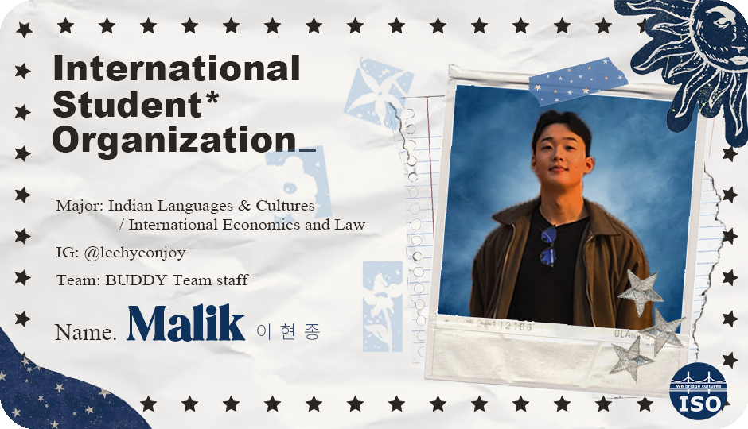
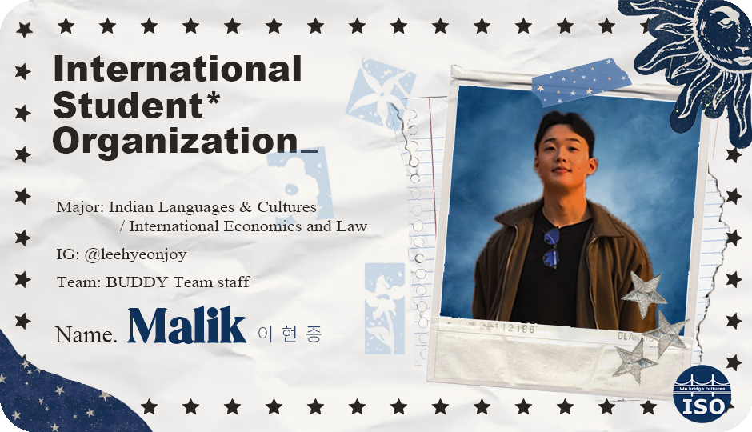

Group 2
 

Message
Hello, everyone! My name is Lee Hyun-jong, and I am studying Hindi at the Department of Indian Studies at Hankuk University of Foreign Studies. I’m really glad to meet you all! I’m working as a staff member for the ISO Buddy Team, and I’m already excited and happy to meet you. I hope we can share positive and bright energy together and make many wonderful memories. I really look forward to seeing you all!
안녕하세요, 여러분! 저는 한국외국어대학교 인도어과에 다니고 있는 이현종입니다. 여러분을 만나게 되어 정말 반가워요! 이번에 ISO 버디팀 스태프로 활동하게 되었는데, 여러분을 만날 생각에 벌써부터 설레고 기쁩니다. 함께 긍정적이고 밝은 에너지를 나누며 많은 좋은 추억을 만들었으면 좋겠어요. 앞으로 잘 부탁드립니다!
Photo
제 고향인 경주의 첨성대 앞 해바라기 들판입니다 ! 우선, 이 사진은 제 애정하는 고향인 경주에서 직접 찍은 사진이라 인상이 깊습니다. 또한 해바라기는 제 최애 식물입니다. 그 이유는 해바라기를 보고 있으면 저도 모르게 열정이 불끈불끈 솟아오르기 때문입니다. 또 제가 느끼기에 해바라기는 해를 바라보며 웃어주고 항상 반겨주는 기분이 드는 식물입니다. 이러한 긍적적인 해바라기의 특징들이 저에게도 긍정적인 영향을 많이 주는 것 같습니다 ! 이것이 이 사진을 좋아하는 이유입니다:)
Hobby
Music: I listen to a wide variety of music, but lately, I’ve been really into American hip-hop and have been playing it nonstop. I mainly listen to artists like Kanye West, Kendrick Lamar, SZA, and Frank Ocean.
Movie: I recently watched Christopher Nolan’s film Memento, and it left a deep impression on me. I highly recommend it!
Sports: I prefer watching sports over participating in them. I mostly follow international sports leagues like the NBA, MLB, UFC, EPL, and La Liga, rather than those in Korea. Recently, I’ve been enjoying UFC and NBA the most! In the NBA, my favorite team is the Sacramento Kings, and among the players, I really like De’Aaron Fox.
Reading: I recently read "The Vegetarian" by Han Kang, a Nobel Prize-winning author from Korea. It's an incredible privilege to read a Nobel-winning piece in its original language without any translation. While the content might be uncomfortable for some, I personally found it thought-provoking.
Travel: The last place I visited was Turkiye, and it was amazing. Both the architecture and natural landscapes were fantastic, and the food was absolutely delicious. I was especially fascinated by Cappadocia, with its otherworldly terrain. I also tried the famous Turkish kaymak, and now I understand why people call it taste of heaven. During my trip, I felt thankful to BTS and other Korean male idols because, thanks to them, the perception of young Korean men has improved. People were very friendly and welcoming when they found out I was Korean. These memories still remain as wonderful experiences for me!
Next, I would love to visit India and the United States. I’ve always wanted to go to India because it’s the country related to my major, and I’m eager to experience an adventurous trip. As for the United States, I’ve never been to the world’s number one country, and I feel it’s something I must do.
음악: 저는 매우 다양한 장르의 음악을 듣습니다. 요즘은 미국 힙합에 빠져서 그것만 주구장창 듣고 있습니다 ㅎㅎ 주로 칸예웨스트, 켄드릭 라마, SZA, Frank Ocean과 같은 가수들의 음악을 많이 듣고 있어요.
영화: 최근에 크리스토퍼 놀란감독의 메멘토라는 영화를 정말 감명깊게 봤어요. 추천합니다!
스포츠: 스포츠를 직접 하는 것 보다는 보는 것을 많이 좋아합니다. 주로 한국에서 하는 스포츠들 보다는 NBA,MLB,UFC,EPL,LALIGA 같은 해외 스포츠리그들을 많이 챙겨봅니다. 이중에서 요즘은 UFC랑 NBA를 가장 즐겨보는 것 같아요! NBA에서는 새크라멘토 킹스라는 팀을 가장 좋아하고 그 중에서는 디애런 팍스 선수를 가장 좋아합니다!
독서: 최근에 한국에서 노벨 문학상을 수상하신 한강 작가님의 채식주의자를 읽었어요. 먼저 노벨 문학상 수상작을 어떠한 번역을 거치지 않고 원문을 그대로 읽을 수 있는 것은 엄청난 행운이었어요. 내용도 누군가는 불편해 할 수 있지만 저는 개인적으로 많은 생각이 들게하는 작품이었어요.
여행: 제가 가장 최근에 방문한 곳은 튀르키예인데 정말 좋았어요. 건축물과 자연환경 모두 훌륭하고 음식도 정말 맛있었어요. 특히 카파도키아는 외계인이 만든 것 같은 지형이라 정말 신기했어요. 튀르키예에서 유명한 카이막도 먹어봤는데, 왜 사람들이 천상의 맛이라고 하는지 이해가 되더라고요. 여행하면서 BTS를 비롯한 한국 남자 아이돌에게 감사한 마음이 들었어요. 그 이유는 이 분들 덕분에 젊은 한국 남자들에 대한 인식이 좋아져서 사람들이 한국인이라고 하면 정말 좋아하고 잘 대해주셨어요😚 저에게는 아직까지 이 기억들이 정말 좋은 추억으로 남아있어요!
다음에는 인도나 미국쪽 여행을 가고 싶어요. 그 이유는 인도는 제 전공 나라이기 때문에 꼭 한번 가고 싶었고 저는 안정적인 여행도 좋지만 조금은 익스트림함 여행도 경험해보고 싶어서 인도 여행은 꼭 가보고 싶어요. 미국은 제가 살면서 세계 1등 나라를 아직 한번도 안가봐서 꼭 가고 싶다는 생각이 듭니다.


Hi!
Hobby
Yeah, walkin' on the bridge, I threw my sins over the deep end Sippin' 'til my stomach hurt, this month I done lost three friends Early mornin', brainstormin', normally I can't sleep in